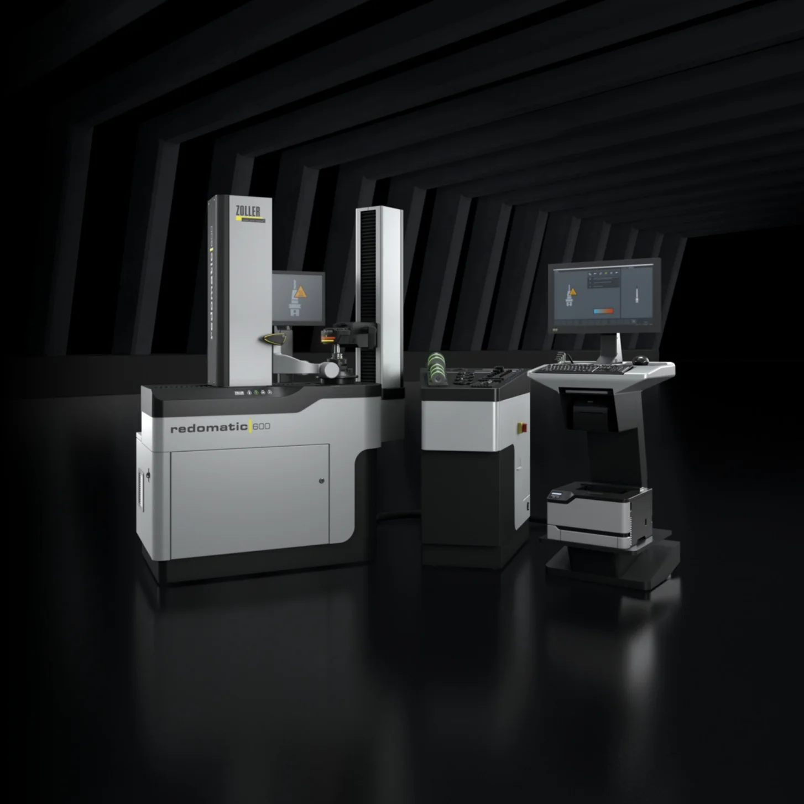
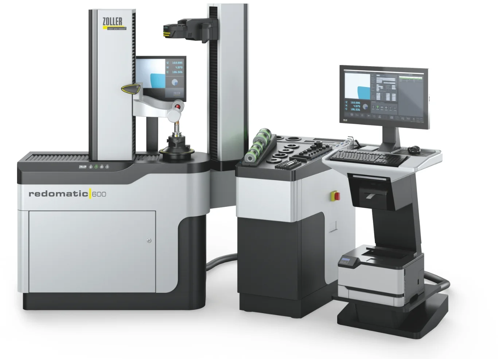
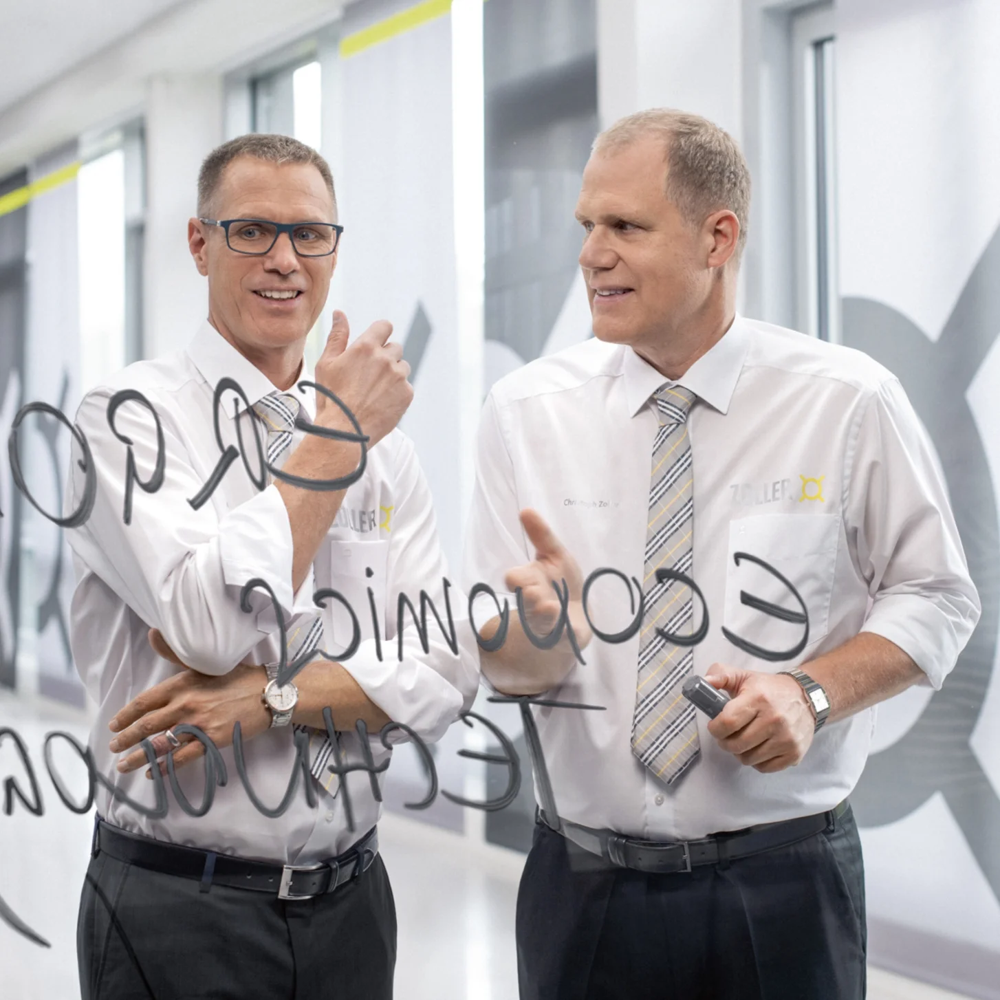
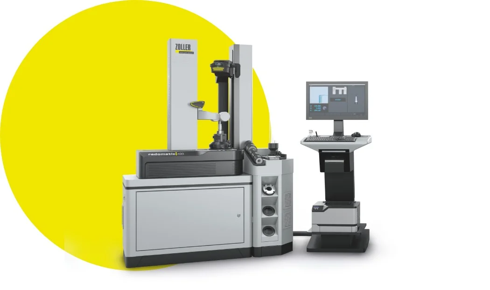

»redomatic«
Appareil universel de réglage et de mesure avec système de serrage d'outils
intégré

»actbyLight«
Au final, une seule chose compte : une qualité exceptionnelle
Avec un »redomatic 400« ou »un redomatic 600« de ZOLLER, vous optimiserez la production sur vos machines multibroches et dans votre production en série automatisée. En effet, avec »redomatic«, vous avez la certitude que les longueurs d’outils sont toujours réglées correctement. Le processus de rétraction développé par ZOLLER à l’aide de l’adaptateur de réglage »masterPiece« est à la fois rapide et simple.
Demandez dès maintenant un entretien individuel avec un expert

Concept d'utilisation unique
Précision maximale
Sécurité certifiée
technique de rétraction
Moins d'énergie, un rendement maximal
Avec »redomatic« de ZOLLER, vous gagnez du temps, réduisez vos coûts d'électricité et préservez vos mandrins à serrage par rétrécissement grâce à une interaction parfaite entre l'électronique, le logiciel et la mécanique, ainsi qu'à un processus de rétrécissement bien pensé et sûr.

technique de rétraction
Une conception intelligente pour une efficacité maximale
La bobine d'induction ZOLLER constitue l'un des atouts intelligents et bien pensés du »powerShrink«. Deux enroulements montés en parallèle à l'intérieur de la bobine peuvent être activés séparément et commandés différemment en fonction du diamètre et de la longueur de la pièce à serrer. Cela permet un apport d'énergie optimal dans la zone de serrage, accélère les processus de chauffage et de refroidissement et préserve vos porte-outils.
Bobine d'induction avec système de blindage »varOct« Solution autonome »powerShrink«


Une synergie haute performance

Aspiration des gaz de combustion
Aspiration des fumées
Élimine efficacement les fumées de la zone de travail de l'opérateur. Le système d'aspiration des fumées, éprouvé et breveté, situé au-dessus de la bobine d'induction, a été complété par un système d'aspiration intégré à l'intérieur du boîtier de la bobine. Les gaz de combustion sont ainsi aspirés directement à l'endroit où ils se forment.
Bobine d'induction »varOct«
Bobine d'induction intelligente avec système de blindage »varOct«
Avec réglage automatique du diamètre jusqu’à un diamètre de tige maximal de 32 mm pour une puissance de chauffage optimale dans chaque cas. Le processus de chauffage est surveillé en continu. Le diamètre intérieur du système de blindage »varOct« peut être réglé rapidement et automatiquement sur le diamètre souhaité à l’aide d’un système à crans. Grâce à son diamètre intérieur maximal de 45,8 mm, il est également possible de retirer facilement par rétraction des outils présentant un diamètre de tranchant plus important.
Également disponible en option avec une interface de changement rapide permettant de passer rapidement d’une bobine de 14 kVA à une bobine de 22 kVA.
Poignée à une main »eQ«
Poignée de commande à une main »eQ« (ergonomic & quick)
D'une seule main, il est possible de déplacer rapidement le support optique simultanément dans les axes Z et X et de le positionner très facilement à l'endroit souhaité. De plus, d'autres fonctions de »pilot 4.0« peuvent être intégrées au bouton supplémentaire de »l'eQ«.
Système de butée longitudinale »asza«
Système automatique de butée de longueur »asza«
Précision inférieure à 10 μm sur l'axe Z pour le rétrécissement.
Surveillance de la longueur de rétrécissement – pour un rétrécissement sûr et contrôlé des outils avec surveillance de la longueur minimale de rétrécissement.
Broche haute précision »ace«
Broche haute précision »ace«
Système de broche universel de haute précision, offrant un comportement de serrage similaire à celui d'une broche de machine-outil, garantissant un logement et un serrage des outils au micromètre près. Le système universel de changement de porte-outils permet une adaptation à pratiquement tous les systèmes de porte-outils.
Cloche de refroidissement
Cloche de refroidissement innovante avec guidage de l'opérateur »« coolbyLight »«
Pour un processus de refroidissement sûr et facile à gérer grâce au système de couleurs des LED. Il est également possible d'opter pour la version avec les cloches de refroidissement standard sur le modèle »redomatic 600«.
Logiciel « Cooling Manager » pour l'unité de refroidissement : celle-ci ne s'active automatiquement qu'en cas de besoin.
Meuble d'appoint
Unité d'appoint
Destinée à accueillir le système électronique de rétraction, les cloches de refroidissement, les bagues de fixation, les barres de butée et l’adaptateur de réglage ZOLLER »masterPiece«. L’affichage du système de guidage de rétraction »sls« dans le logiciel de traitement d’images permet une sélection rapide des accessoires nécessaires.
Le système de guidage de rétraction »sls« – »pilot 4.0« guide l’opérateur de manière sûre et rapide tout au long du processus de rétraction grâce à des étapes de travail définies avec précision dans le logiciel.
Logiciel de traitement d'images »pilot 4.0«
IPC équipé du logiciel de traitement d'images »pilot 4.0«
Le système de commande, composé d'un IPC, de »pilot 4.0« et d'un écran couleur TFT 24 pouces, prend en charge toutes les tâches d'usinage liées au réglage, à la mesure et au rétrécissement, et garantit une utilisation simple et sûre. L'écran est réglable en hauteur et en inclinaison, ce qui rend l'utilisation du logiciel extrêmement confortable. Le »cockpit« offre de la place pour un clavier et une souris, ainsi que des rangements pour les imprimantes d'étiquettes et laser, un scanner et des outils tels que des clés Allen.
Aspiration des gaz de combustion
Aspiration des gaz de combustion
Aspiration des fumées
Élimine efficacement les fumées de la zone de travail de l'opérateur. Le système d'aspiration des fumées, éprouvé et breveté, situé au-dessus de la bobine d'induction, a été complété par un système d'aspiration intégré à l'intérieur du boîtier de la bobine. Les gaz de combustion sont ainsi aspirés directement à l'endroit où ils se forment.
Bobine d'induction »varOct«
Bobine d'induction »varOct«
Bobine d'induction intelligente avec système de blindage »varOct«
Avec réglage automatique du diamètre jusqu’à un diamètre de tige maximal de 32 mm pour une puissance de chauffage optimale dans chaque cas. Le processus de chauffage est surveillé en continu. Le diamètre intérieur du système de blindage »varOct« peut être réglé rapidement et automatiquement sur le diamètre souhaité à l’aide d’un système à crans. Grâce à son diamètre intérieur maximal de 45,8 mm, il est également possible de retirer facilement par rétraction des outils présentant un diamètre de tranchant plus important.
Également disponible en option avec une interface de changement rapide permettant de passer rapidement d’une bobine de 14 kVA à une bobine de 22 kVA.
Poignée à une main »eQ«
Poignée à une main »eQ«
Poignée de commande à une main »eQ« (ergonomic & quick)
D'une seule main, il est possible de déplacer rapidement le support optique simultanément dans les axes Z et X et de le positionner très facilement à l'endroit souhaité. De plus, d'autres fonctions de »pilot 4.0« peuvent être intégrées au bouton supplémentaire de »l'eQ«.
Système de butée longitudinale »asza«
Système de butée longitudinale »asza«
Système automatique de butée de longueur »asza«
Précision inférieure à 10 μm sur l'axe Z pour le rétrécissement.
Surveillance de la longueur de rétrécissement – pour un rétrécissement sûr et contrôlé des outils avec surveillance de la longueur minimale de rétrécissement.
Broche haute précision »ace«
Broche haute précision »ace«
Broche haute précision »ace«
Système de broche universel de haute précision, offrant un comportement de serrage similaire à celui d'une broche de machine-outil, garantissant un logement et un serrage des outils au micromètre près. Le système universel de changement de porte-outils permet une adaptation à pratiquement tous les systèmes de porte-outils.
Cloche de refroidissement
Cloche de refroidissement
Cloche de refroidissement innovante avec guidage de l'opérateur »« coolbyLight »«
Pour un processus de refroidissement sûr et facile à gérer grâce au système de couleurs des LED. Il est également possible d'opter pour la version avec les cloches de refroidissement standard sur le modèle »redomatic 600«.
Logiciel « Cooling Manager » pour l'unité de refroidissement : celle-ci ne s'active automatiquement qu'en cas de besoin.
Meuble d'appoint
Meuble d'appoint
Unité d'appoint
Destinée à accueillir le système électronique de rétraction, les cloches de refroidissement, les bagues de fixation, les barres de butée et l’adaptateur de réglage ZOLLER »masterPiece«. L’affichage du système de guidage de rétraction »sls« dans le logiciel de traitement d’images permet une sélection rapide des accessoires nécessaires.
Le système de guidage de rétraction »sls« – »pilot 4.0« guide l’opérateur de manière sûre et rapide tout au long du processus de rétraction grâce à des étapes de travail définies avec précision dans le logiciel.
Logiciel de traitement d'images »pilot 4.0«
Logiciel de traitement d'images »pilot 4.0«
IPC équipé du logiciel de traitement d'images »pilot 4.0«
Le système de commande, composé d'un IPC, de »pilot 4.0« et d'un écran couleur TFT 24 pouces, prend en charge toutes les tâches d'usinage liées au réglage, à la mesure et au rétrécissement, et garantit une utilisation simple et sûre. L'écran est réglable en hauteur et en inclinaison, ce qui rend l'utilisation du logiciel extrêmement confortable. Le »cockpit« offre de la place pour un clavier et une souris, ainsi que des rangements pour les imprimantes d'étiquettes et laser, un scanner et des outils tels que des clés Allen.
Nous incarnons les solutions ZOLLER
ZOLLER Solutions – Chez nous, vous obtenez bien plus que des produits d'exception. Vous bénéficiez de solutions système sur mesure pour tous vos outils. Pour cela, nous combinons pour vous matériel, logiciels et services. Tout d'une seule source. Tout pour votre réussite. C'est ce que nous appelons : ZOLLER Solutions.

»redomatic 400«
Le haut de gamme compact. Faites votre choix en toute simplicité et en toute transparence, ou contactez-nous !

»redomatic 600«
Une combinaison haute performance. Faites votre choix en toute simplicité et en toute transparence, ou contactez-nous !